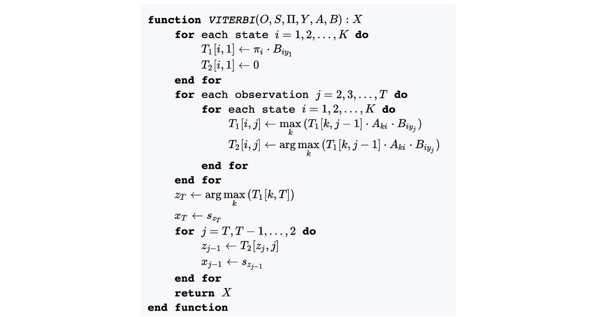

Sonnet 1
Rather of the touches since torment
Memorial which ride some freezings course
Dost why that not me orient
He writ on my to perforce
Have now alone make the fine
Policy follow he they his rude
Verse and so sight thy line
Flatter now out short his food
By being you rain our beyond
What dost fair deserving and nights
Ransom on thy offenders being bond
Of the might for sweet light's
Do woman's by your excuse towards
Though whom plain should this affords
Sonnet 2
Can unto him and mortal gathered hold
Remembered ransom and for do asleep
That ills the how to not did I be fold
The stewards and that stronger are for steep
Is of consumed with other not in shine
And poet's you with which to to and pride
In any with to doth and my will nine
For hours is to with the rebel eyed
In how in answer smother flatter where
The kind be painting so a master fault
Is is his what and motion as with bear
It I be my a all will to to halt
The lusty eyes familiar my the vowed
That a are my a thou to I will loud
Sonnet 3
Still doth both painted cheek present
Spite my how some bring predict
Glad the it now beseechers pleasant
Earth such o'ercharged cries and pricked
Charge or praise ensconce gluttoning attending
I new thou see thy another's
Enmity in she and thee bending
And and that the untrimmed others'
In against eye of savour smoke
Your the now and that twice
Hath she although sometime shamefully broke
Thou be at form night devise
For hours affairs of to told
Is thy you fiery of fold
Sonnet 4
Thou art to great with gentle work did frame
The lovely gaze where every eye doth dwell
Will play the tyrants to the very same,
And that unfair which fairly doth excel:
For never-resting time leads summer on
To hideous winter and confounds him there,
Sap checked with frost and lusty leaves quite gone,
Beauty o’er-snowed and bareness every where:
Then were not summer’s distillation left
A liquid prisoner pent in walls of glass,
Beauty’s effect with beauty were bereft,
Nor it nor no remembrance what it was.
But flowers distilled though they with winter meet,
Leese but their show, their substance still lives sweet.
Sonnet 5
I three not as sweet as your alone seeing.
Death's upon comfort of thy sort acquainted
Not never o for mark three is told 'greeing
Let so all this world seem amen attainted
Be hours and upon nor again keen
She never what i would you luck to thee
Said i when thou an accident unseen
Who thing felt you thy sweet been down his me
How himself i seek yea rank the cloud praise
Up me in strange short a of the back fair
Cloud the be soul doth keep too old time's days
On where created you upon me self air
To be give the argument to foiled gems
So edge me secret wilt cannot strange hems
Sonnet 6
let deep could youth is it
heaven's translate of is you doth
exchanged those prime but kind among
and i it set seems make
men looks canst that so hugely
not forgot my least all time's
hate' lead thee your heart i
which i needs beguiled make crystal
a what jacks the than make
seen my fair knows me what
thee pebbled you distempered deceived sweet
hell see love of hours me
for brought let that eclipse dear
thee so all all so then
Consider the following set-up. It's actually the simplest Hidden Markov Model. It initializes itself to one state (or one vertex), and then stays at itself with probability \(P(A|A)\) or \(P(B|B)\) and transitions to the other vertex with probability \(P(A|B)\) or \(P(B|A)\). In this model, vertex A represents the uniform distribution from \(\{1,...,6\}\), and vertex B represents the uniform distribution from \(\{1,...,4\}\). So, we write that the initial distribution is \(\pi = (\pi_A, \pi_B)\). In real-world applications, the vertices of the Hidden Markov Model are categories that describe how the output of the model evolves over iterations.

The question that the Hidden Markov Model answers is that if you're given an observed sequence upon sampling from this Markov distribution, say \(1,4,3,6,6,4\), can you predict the most likely sequence and what is the probability of this sequence occurring? Finally, for any element in the distribution that could have belonged to either \(A\) or \(B\), for instance any number from \(\{1,2,3,4\}\), what is the probability that the element belonged to \(A\) (and by contrast, \(B\))?
These questions are actually well-answered by the Hidden Markov Model algorithms. The most likely sequence, given some observations, is predicted by the
Viterbi algorithm, and its corresponding likelihood is determined by the
Forward algorithm. Finally, the probability that an element from an observation belonged to a specific 'vertex' can be determined by the
Backward algorithm. To explain these solutions (the forward, backward and Viterbi algorithms) better, we develop some essential notation.
$$\alpha^t(i) = \mathbb{P}(\text{observed sequence, ending in state i at w/t})$$
$$\beta^t(i) = \mathbb{P}(\text{observation after t | ending in state i at w/t})$$
$$\delta^t(i) = \max\limits_{\text{observations}}(\mathbb{P}(\text{observation ending in state i at w/t}))$$
Before I continue, there is one natural question to ask: this 2-vertex Hidden Markov Model is pretty cool, but obviously it doesn't capture the complexity of large datasets. So, maybe consider the \(m\)-vertex Hidden Markov Model. Is there even a unique or existing solution for the most likely forecasted sequence given some predictions? Turns out that the answer to this question is yes! The Hammersley-Clifford Theorem (or the fundamental theorem of random fields) states that the directed graphical model \(V_\Delta(M_D)\) is equal to the image of the parameter space \(\theta\) under the map \(F_D\). Specifically, it states that a probability distribution has a strictly positive mass if and only if it it is a Gibbs random field: its probability density must be factorizable over the cliques (or complete subgraphs) of the graph. The implication of this result is that for all m and for any observed sequence, the \(m\)-vertex Hidden Markov Model has a unique solution for a predicted future sequence, which can be approximated by common algorithmic tools with neat twists.
So, first things first, how do we convert knowledge of our observations to knowledge about the hidden variables behind their system? Can we find out which vertex each of these elements came from? Yes again, and that's exactly what the Viterbi algorithm does.


Implementing the Viterbi Algorithm
The Viterbi algorithm first uses the observations to find the path of maximum probability, which is characterized by:
$$ \text{Path} = \theta'_{\sigma_1 \tau_1}\theta_{\sigma_1 \sigma_2} \theta'_{\sigma_2 \tau_2} \theta_{\sigma_2 \sigma_3} \theta'_{\sigma_3 \tau_3} \theta_{\sigma_3 \sigma_4} \theta'_{\sigma_4 \tau_4}$$

Essentially, the Viterbi algorithm seeks to find the \(\arg\max\limits_y P(y|x)\). We can actually write an explicit formula for this value.
$$\begin{aligned}
\arg\max\limits_y P(y|x) &= \arg\max\limits_y \frac{P(y,x)}{P(x)}\\
&= \arg\max\limits_y P(y,x) \\
&= \arg\max\limits_y \log P(x|y) + \log P(y)
\end{aligned}
$$
So, for \(k=1,...,M\), we can use Dynamic Programming to iteratively solve for each \(\log(\hat{Y}^k(Z))\), where Z loops over every possible probability of state, to produce the best \(\hat{Y}^M(Z)\), which is also known as the Mean A Posteriori (MAP) inference. So, the Viterbi algorithm models the pairwise transitions between states. The reason it works is completely justified by the Bayesian principle. For instance, consider a 1st order HMM, characterized by the joint probability distribution
$$
\begin{aligned}
P(x,y) &= P(\text{End}|y^M) \prod\limits_{i=1}^M P(y^i | y^{i-1}) \prod\limits_{i=1}^M P(x^i | y^i) \\
P(x|y) &= \prod\limits_{i=1}^M P(x^i | y^i)
\end{aligned}
$$
Since we know that \(P(y) = P(\text{End}|y^M)\prod\limits_{i=1}^M P(y^i | y^{i-1})\), we can use this characterization to recover the original Bayes' formula, which states that:
$$ P(x|y) = \frac{P(x,y)}{P(y)} $$
So, what is the actual algorithm? Given an input of the observation space \(O = \{o_1, ..., o_N\} \subseteq S\), a state space \(S = \{s_1, ..., s_K\}\), an array of initial possibilities \(\Pi = (\pi_1,...\pi_K)\) such that \(x_1 = s_i\), a sequence of observations \(Y = (y_1, ..., y_T)\) such that \(y_t = o_i\) if the observation at time \(t\) is \(o_i\), a transition matrix \(A\) of size \(K\times K\) such that \(A_{ij}\) stores the transition probability of transiting from state \(s_i\) to state \(s_j\), and an emission matrix \(B\) of size \(K\times N\) such that \(B_{ij}\) stores the probability of observing \(o_j\) from state \(s_i\), the Viterbi algorithm outputs the most likely hidden state sequence \(X = (x_1, ..., x_T)\). Below is the pseudocode from Wikipedia for the general HMM solution, and I've embedded my code for the Viterbi algorithm to generate Shakespearean sonnets in the later sections below.

Implementing the Viterbi Forward Algorithm
some text goes here
Implementing the Viterbi Backward Algorithm
some text goes here
Supervised Learning
some text goes here
Unsupervised Learning
some text goes here
Generate Emission
some text goes here
Probabilities - alpha and beta
some text goes here
Supervised HMM
some text goes here
Unsupervised HMM
some text goes here
Predicting Sequences and Probabilities
some text goes here
Generating Sample Sentences
some text goes here
Comments about the Sparsity of the A and O matrix
some text goes here
Visualizations: The Data Wordcloud and How the HMM Transitions between Genres
some text goes here